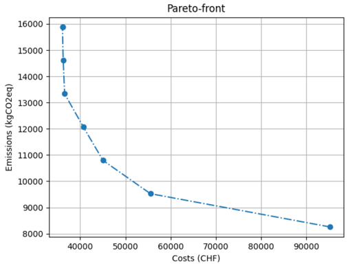

Optimizing the energy network
Once the energy system has been defined as an object of the EnergyNetworkIndiv class or the EnergyNetworkGroup class and the model components (and parameters) have been set from the input excel file, the network object could then be optimized:
envImpact, capacitiesTransformers, capacitiesStorages = network.optimize(solver='gurobi',
envImpactlimit=envImpactlimit,
clusterSize=clusterSize,
options=optimizationOptions)
The first parameter solver specifies the name of solver to be used for optimization. solver could take the values
gurobi, cbc, cplex or glpk. envImpactlimit denotes the maximum limit for environmental impact. This parameter
becomes relevant in case of multi-objective optimization and would be described in the later sections. For single-objective
optimization set this parameter to a significantly high value which would never be reached (For example: 10^6). clusterSize
is the parameter related to clustered days (if defined). This is an optional parameter and is required only if clustered
days are used. options specifies the command line parameters to be passed to the selected solver. This parameter is
described further in the following section. The optimize function returns the environmental impact of the optimized energy
model, the capacities selected for energy transformers (or converters such as CHP, heat pump, etc.) and for the storages
in the optimized energy network model.
Optimization options
The options parameter of the optimize function allows passing command line options to the solver. The optimization options
could be passed as a dictionary indexed by the solver name. For example:
# solver specific command line options
optimizationOptions = {
"gurobi": {
"BarConvTol": 0.5,
# The barrier solver terminates when the relative difference between the primal and dual objective values is less than the specified tolerance (with a GRB_OPTIMAL status)
"OptimalityTol": 1e-4,
# Reduced costs must all be smaller than OptimalityTol in the improving direction in order for a model to be declared optimal
"MIPGap": 1e-2,
# Relative Tolerance between the best integer objective and the objective of the best node remaining
"MIPFocus": 2
# 1 feasible solution quickly. 2 proving optimality. 3 if the best objective bound is moving very slowly/focus on the bound
# "Cutoff": #Indicates that you aren't interested in solutions whose objective values are worse than the specified value., could be dynamically be used in moo
},
"cbc": {"tee": False}
}
The options for a new solver could be added as a new item in this dictionary in the form:
solver_name:{option_name: option_value}
where solver_name specifies the name of the solver, option_name and option_value are the name and value, respectively
of the command line option.
For more details on the different command line options which could be passed to the solver, we recommend you to have a look at the documentation of the respective solver.
Single-objective optimization
Single-objective optimization can be performed easily by calling the optimize function of the EnergyNetworkIndiv or
EnergyNetworkGroup class once the energy network has been defined. The optimization problem and the energy network should
be defined using the input excel file. The target for single-objective optimization could be specified at this stage as
a parameter passed in the setFromExcel function:
network.setFromExcel(inputExcelFilePath, numberOfBuildings, clusterSize, opt)
The parameter opt could be set to either 'costs' or 'env' for optimization based on cost or environmental impact,
respectively. The respective data related to costs/environmental impact of the energy resources and the available energy
conversion and storage technologies should be given in the appropriate sections of the input excel file.
For more details on the setFromExcel function and the structure of the input excel file, have a look at Defining an energy network.
Multi-objective optimization
Multi-objective optimization can be performed as multiple single objective optimizations. At present, the two supported
target objectives are 'costs' (total cost) and 'env' (environmental emission). The first optimization would then be for
cost minimization and the second for the minimization of emissions, which would give the two extremes i.e. cost-optimum
solution and environmental optimum solution. And then, more solutions are obtained between the cost and environmental
optimum, these optimizations are a minimization of the cost subject to a constraint on the environmental criteria (epsilon
constraint method). The speed of optimization would be greatly affected by the number of optimizations to be performed.
The results from multi-objective optimization can be visualized using a pareto front.
{kind=link}
For more information on how to work with multi-objective optimization go through the example.